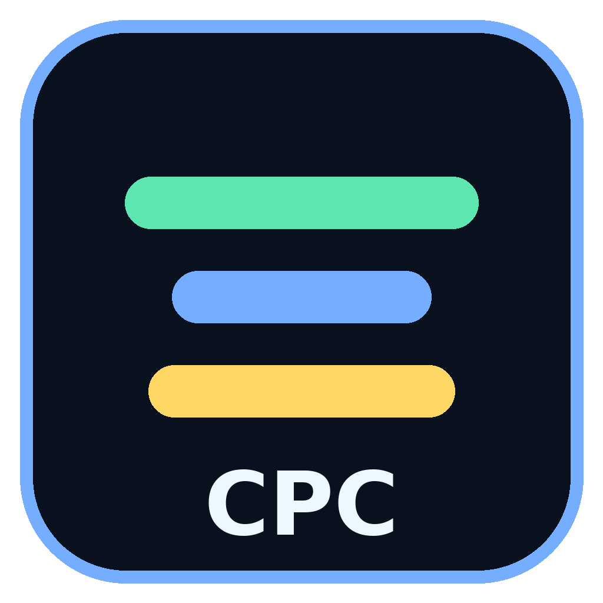

Central Apps
Four apps for a worship team. Central Pedal is the Raspberry Pi on stage: pads, multitracks, click, the guitar and keys rig. Central Pedal Control gets it ready from any computer, tablet or phone. Central Control runs the team from the main admin's computer: lights, slides, lyrics, cameras, in-ears, tracks and mixing. Central Usage is the musicians' app: the chord chart, the instrument, the lyrics and your in-ear mix.
Finding the newest version…
Central Pedal Control
Mac · Windows · Linux · iPad · iPhone · Android
DownloadCentral Pedal Control
The Central Pedal app away from the pedal. Make the setlist and add songs: your own stems, a whole song split by the stem splitter, MultiTracks.com and Loop Community downloads, or Central Tracks. Set up the pads, footswitches, knobs and the instrument at home or in the office. Then press ⇪ Upload and type the pedal's PIN, and it all goes to the Central Pedal on the church Wi-Fi. ⇩ Download brings the pedal's setup back.
The stem splitter and MP3 practice mixes run on a computer (or on the Central Pedal); on a phone or tablet everything else works.
Central Control
For the main admin (usually the sound desk) and the admins: lighting, cameras, slides and lyrics, in-ear mixes, the tracks, mixing and talkback. The main admin's copy is the center of the team, and with no Central Pedal it plays the tracks, charts and lyrics itself (its player window).
Central Usage
For the musicians and singers (User 1 / User 2): the chord chart for your instrument, the lyrics, the instrument rig and your own in-ear mix. It all comes from the main admin's computer on the Wi-Fi.
Opening it the first time
The apps are free and not signed with a paid Apple / Microsoft / Google certificate, so the device asks once.
Windows: “Windows protected your PC”
- Click More info.
- Click Run anyway. It installs and opens by itself.
Mac: “can't be opened” / “Apple could not verify…”
- Open the
.dmgand drag the app into Applications. - Open the app once - the Mac refuses. Click Done.
- Open System Settings → Privacy & Security, scroll down and click Open Anyway next to the app's name, then confirm.
- When it asks to use the microphone, allow it (the audio interface, the in-ears, the tuner and the instrument need it).
If the Mac says the app “is damaged”, open Terminal and run the line for that app:
xattr -dr com.apple.quarantine "/Applications/Central Usage.app" # Central Control xattr -dr com.apple.quarantine "/Applications/CentralUsage.app" # Central Usage xattr -dr com.apple.quarantine "/Applications/Central Pedal Control.app" # Central Pedal Control
Android: “install unknown apps”
- Open the downloaded
.apk(Downloads, or the browser's notification). - Android asks to allow installs from your browser: Settings → turn on Allow from this source → back → Install.
- Open the app on the church Wi-Fi. Central Usage: tap Find the main admin. Central Pedal Control: set up your songs, then ⇪ Upload to the pedal.
Linux
- .deb:
sudo apt install ./<the file>.deb(the./matters). Each app installs next to the others. - AppImage: right-click → Properties → Permissions → Allow executing file as program, then double-click.
iPhone & iPad (Central Usage)
- Join the same Wi-Fi as the main admin's computer.
- In Safari, open
http://<main admin>:8095/cu/. The address is in the main admin's Central Control → Settings → This computer. (With a Central Pedal,http://padpedal.local:8080/cu/works too.) - Pick User 1 or User 2 and type the main admin's pairing PIN.
- Tap Share → Add to Home Screen. It opens full screen like an app and always has the newest version.
The Central Usage and Central Pedal Control apps for iPhone / iPad come through TestFlight and the App Store once the church's Apple Developer account is set up.
Raspberry Pi (Central Pedal)
Already running Central Pedal
Nothing to download: connect it to the internet, open Settings, and press Install when Update ready appears. Your songs and settings stay. No internet there? Put central-control-source.zip on a USB stick and use Settings → Update software from USB….
A new SD card (built on an Ubuntu PC)
mkdir -p ~/Downloads/central && cd ~/Downloads/central NEWEST=$(wget -qO- https://api.github.com/repos/MotionAudio/Central-Apps/releases/latest) wget -O central-control-source.zip "$(echo "$NEWEST" | grep -o 'https://github.com/[^"]*central-control-source\.zip')" rm -rf source && unzip -q central-control-source.zip -d source && cd source sudo WIFI_SSID="your network" WIFI_PASS="your password" bash build-image.sh
Then flash the .img with Raspberry Pi Imager → Use custom (choose No for OS customisation). More in INSTALL.md.